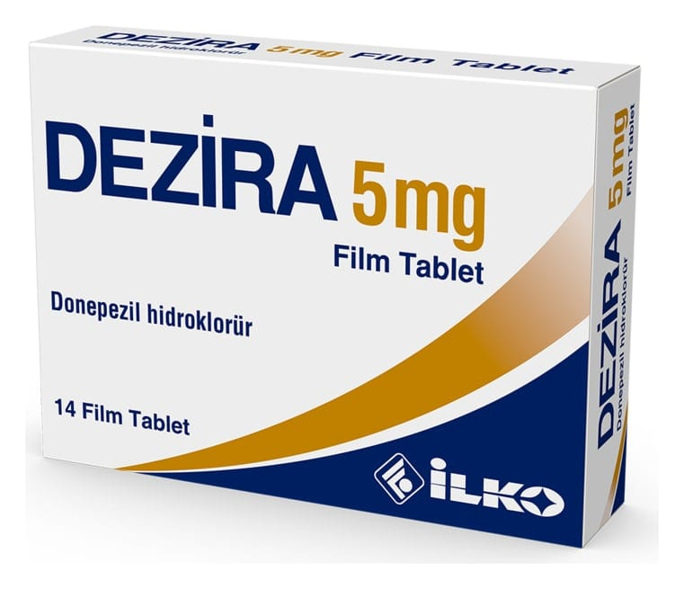

Dezira 5 mg Film Kaplı Tablet, 14 Adet

Ne için kullanılır
KT · Bölüm 1DEZİRA, beyaz veya beyazımsı renkte, yuvarlak film kaplı tablettir. Her bir tablet 5 mg donepezil hidroklorür içerir. 14 ve 28 tabletlik ambalajlarda sunulmuştur. DEZİRA tablet, hafif ve orta şiddetli Alzheimer tipi bunama belirtilerinin tedavisinde kullanılır ve etkin maddesi donepezil hidroklorür, asetilkolinesteraz inhibitörleri olarak anılan bir ilaç sınıfına aittir. DEZİRA, yalnızca erişkin hastalarda kullanılır.